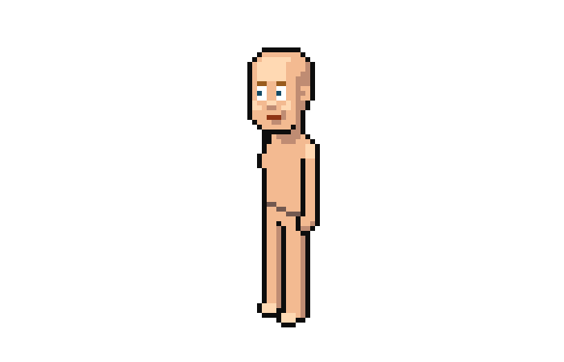
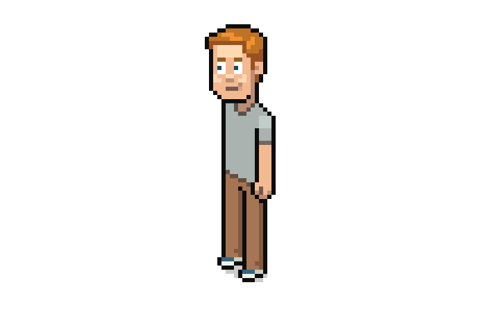
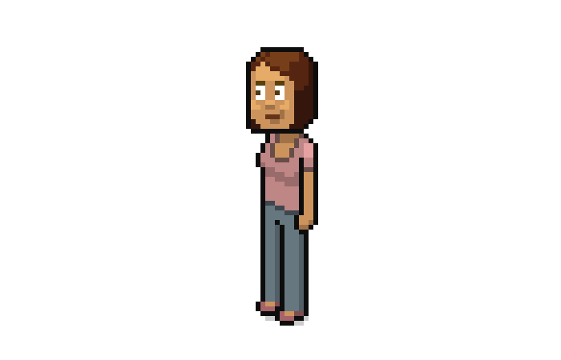

How to create Pixel Characters in Adobe Photoshop
The best way to start creating isometric pixel art graphics is to design a character, as the environments and most other elements will conform to that.
So let’s make a character which we’ll copy it to have a group of four and you’ll see that it’s pretty easy to turn those into even more!
1. Drawing the Head
We’ll be making a relatively detailed character; about 60 px tall, which will allow us to see detail in the face like the whites of the eyes and even a smile. So definitely, the head will be the place to start.
Step 1
Create a New File in Adobe Photoshop. Make it any size between 200px and 600px wide and tall.
Zoom to around 600% and draw some skin color. I use the color picker with the Hue/Saturation/Brightness slider and the color I’m using is 25˚/40%/95% respectively
In the middle of your block of skin color add a single black or almost black pixel with the Pencil Tool. This will be an eye.
Step 2
Now add some white or almost white around the dark pixel. The white doesn’t need to go all around the black but the eyes will still work fine, it’s actually better than if the white goes all around which results in more of a shocked look and a wider face, to accommodate the extra pixels.
Step 3
Duplicate the first eye and position the copy by the side for the first eye. In the isometric view, horizontal lines are askew but for something as defining as a face it’s best to make an exception. So the two eyes line up horizontally and are separated by 2 px of the skin color.
Step 4
At this character resolution we can even afford to add eyebrows so top the eyes with a couple of dark lines. You got eyebrows and the eyes are basically done.
Step 5
So we continue by building around the eyes. Defining the edge of the head with a black vertical line and adding a narrow line or pixel underneath the eyes… looks like a mouth, doesn’t it? but it will instead be a shadow cast by the nose.
By the way, when I say “black lines” or “almost black lines” or “outlines” I usually refer to some color with around 5% brightness; I reserve 0% brightness for transparent shadows as that makes using the magic wand simpler later on, being able to select outlines and shadows separately.
Step 6
Continue to expand the face area and now we can add a mouth. It doesn’t need to be centered in relation to the eyes like the nose. Here it’s almost the same as the nose but extends an extra pixel toward the back of the head.
Step 7
Now we can draw a chin… or rather the lower edge of the face. Don’t mind the super square jaw for now.
Step 8
We will add an ear next to the eyes and on the same level but we’ll need a new, darker shade of skin, with 10% to 20% less brightness and optionally, a slightly redder hue, like 5˚ closer to red.
Leave 2 px of regular skin color between the eye and this new shade.
Step 9
Expand the darker shade of skin to be able to draw in the ear with the regular skin shade.
Step 10
The ear will mark the back edge of the head so add a vertical outline.
Step 11
Expand the head upwards, adding a forehead.
It may look disproportionately large but it’ll work better once the corners get rounded. Though if to your taste it, or anything else looks out of proportion, then try making alternative versions, compare side by side and pick what you think works best.
Step 12
Now, round the corners of the head. These short diagonals will be the new, rounded corners, applied to the two corners at the top and to the chin.
Step 13
Clean up with the Eraser Tool (or the Rectangular Marquee Tool.)
Step 14
The neck will be narrower so we’ll carve into that area a bit.
Step 15
Clean up the neck pixels and your main outlines for the head are done.
Step 16
We’ll cover a good part of the head with hair but for now let’s finish the shading as if the character is bald.
So now the darker skin shade shouldn’t completely reach the top of the head.
Step 17
Let’s add a new, lighter skin shade which we’ll use to highlight a few more details on the face and to bring extra volume.
Here it is applied to the forehead, nose and cheeks.
Step 18
To lower contrast we’ll replace the black eyebrows, eyes and mouth with more appropriate colors. The mouth pretty much becomes a new skin shade but should be somewhere between black and the darker skin shade. The eyebrows can be brown or grey and the eyes in this case blue, but not too light to remain easily readable.
Step 19
To finish work on the face, let’s give our very serious character a slight smile by adding a pixel of the dark skin shade to the side and above the mouth with one extra, less dark pixel to make a sort of anti-aliasing for a smoother smile.
2. Drawing the Body
The basics of the head are done. We’ll add hair later on, when we’re making the individual characters but for now we’ll be doing the body. Starting with a male body.
Step 1
Extend a couple of lines from the head. One down vertically from the chin, which will be the chest, and one in a diagonal from the neck, this will be the shoulder.
Step 2
The shoulder won’t be very wide; here it is 3 px across. That line will then point down to make the outer edge of the arm and we draw the inner edge as another vertical line leaving 3 px between both lines.
Step 3
Extend the chest line until it’s 15 px to 20 px tall.
From the bottom of the chest line we’ll add the hip line, which will be a usual isometric horizontal line which means it will go up/down 1 px for every 2 px that it goes across. The hip line will extend until before the outer arm edge and it should be somewhat rounded or otherwise the hip will look like it’s paper thin. Although we won’t really be seeing that area because the arm will cover it up but if the character is eventually drawn in different positions then it will be visible.
Step 4
The arm will extend down past the hip. Proportions don’t need to be realistic; I put the wrist at about the same height as the hip.
The other arm we won’t show; it’ll be implied that it’s obscured by the chest.
Step 5
On a smaller resolution, with the character being smaller, we would probably leave the hand as the stump we have above. But at this size we can afford to show a bit of a hand, at least enough to convey a thumb.
So let’s turn that stump into a hand.
Step 6
And now we add a leg. Specifically, a pants wearing leg so that we don’t have to worry about curves that will only end up looking unpleasantly jagged.
This is just over 20 px tall. The whole character about 60 px tall and in proportions the body is about 2.5x the height of the head, not realistic but in my opinion it makes sense for the style.
Step 7
We’ll add a small foot, where else, at the end of the leg. Mostly it is this size because making it a pixel longer, which could be better in terms of proportions, also makes it harder to give it a nice shape. But feel free to try your own versions.

Step 8
Now we simply copy that leg to turn it into the other one. Place it following an isometric horizontal line. In this case, as the distance in pixels is an odd number, the toes don’t perfectly match up with the isometric line… but that’s not a big issue.
Step 9
Now fill the body with skin color. We’ll eventually cover most of the body but as we’re not yet making the clothes, it makes sense to sort of have a naked character for now.
Step 10
Let’s add a bit of basic shading to the body, much like we did with the head.
Just a bit of shadow cast by the head, some small shadow on the knuckles and on one side of the legs.
Step 11
And a few highlights. One on the shoulder and one on each foot.
Optionally, you can give the hip line and the inner line of the thumb a softer skin shade (same as the mouth) as we don’t need those areas to have much contrast.
3. Making a Female Character
Now that the basics for our male character are done, we can use it to get a female character without working from scratch.
Step 1
The only change to the head will be the lips (unless you don’t want your female character to wear makeup, then you can skip this step) which will not only be dark red but we can also add a bit of shading for a fuller look.
Step 2
Women are statistically shorter than men so we’ll take out a few pixels in height. I’m taking out 2 px out of the torso and only 1 px out of the legs because proportionally, women have longer legs than men.
Step 3
Since we made the character shorter, it also starts looking a little chubbier because its width hasn’t changed.
But we can maintain the slim proportions by removing 1 px in width. On the torso it is applied to the arm and shoulder. And the legs stay the same but simply move 1 px closer. Adjust the shading accordingly (the inner thumb line didn’t work so great in this smaller hand so it was removed.)

Step 4
Women have more curves than men. And curves are not so great when it comes to pixel art, but we should at least add some breasts.
They’ll project out of the body by 1 px or 2 px. I’ll also be removing a pair of pixels out of the top of the chest which results in narrower looking shoulders and a better shape for the breasts.

Step 5
Remove the top pixels and add some shading to the breasts. Since the character will be wearing clothes, the shading won’t need to conform to each individual breast.
Step 6
So now we got the basics for our male and female characters!
Let’s just add a little bit of a cast shadow as an extra detail and because it’ll make them look more like part of whatever scene you put them in.
We can start doing the shadow by drawing it in any color (but one you haven’t used yet) as working directly with transparent black can have its difficulties.
Step 7
Then once you have the shape you like, replace that color with the transparent black. You can do this with the Magic Wand Tool, set to 0 Tolerance and Anti-Alias and Contiguous checked off. Just click on the shadow, hit delete and then with the Paint Bucket Tool fill in with black (0% brightness this time) and with Opacity set somewhere around 15%.
4. Making Clothes and Hair for the Male Character
Time to start giving our character clothes.
Keep a copy of the nude versions of the characters. They can probably be useful sometime later.
Step 1
The pants are pretty much delimited already so they’ll be very easy to do. You can start by filling the main leg area with some color you like for pants. Use the Paint Bucket Tool, set to Contiguous, fill in a nice color. If you’re not sure about which color you want, then you can select this new color with the Magic Wand Tool, copy and paste on a New Layer and modify the hue on the whole layer with the Hue/Saturation/Lightness panel (Image > Adjustments > Hue/Saturation…) and play with the sliders until you find something you like.
Step 2
Then replace the darker skin shades with darker pant color shades (about 15% lower brightness.)
Step 3
Now we do a similar process for the top, with a different color, one that goes well with the rest of the character, replacing the skin color except with short sleeves or whatever size sleeves you prefer. And replacing the highlight on the shoulder as well.
Step 4
With the shirt color being done, we should add some lines denoting where the shirt ends. As black lines help convey separate volumes, these lines will look better if they are lighter than black. I recommend a dark color with a hue and saturation somewhere in between the two colors that the line is separating.
Step 5
Now the shoes will have white midsoles. Though this is more a very light cream color with a slightly darker shade toward the heel.
Step 6
The shoes will be sneakers and the top color will be different. I chose blue.
To finish that area and all clothing for this character I just added a bit of a crease to the bottom of the pants as those featureless vertical lines on the legs were looking a little boring.
Step 7
Now on to hair.
Let’s draw the hairline for our character and fill the top of the head with some hair color.
I’m making this character blonde. What I’ve applied for now is the darkest shade his hair will have.
Step 8
That would look ok if his hair was very short, but I’ll be giving him longer hair with a side part so that means expanding the hair area and adjusting its outline.
Step 9
Then apply a middle shade, in a shape that helps convey the hairstyle.
Step 10
And then add just a few highlights.

And we got one character down!
5. Making Clothes and Hair for the Female Character
Similarly, it’s time to dress up our lady character.
Step 1
Get those pants some color. Apply to the shading as well.
Step 2
Choose a color for the top. For the female character we can try a broader shirt neck and shorter sleeves.
Step 3
Apply the border lines to the shirt.
For the hip line I chose an even darker shade of the pants color.
Step 4
Add some shoes. Don’t need to be sneakers.
Step 5
Now we choose a hair color, draw a hairline and fill in the top of the head.
Step 6
We’ll give this character a ponytail, so we won’t need to give the hair any extra size, just add the lighter shading.
Step 7
And then draw a ponytail, just visible behind her head.
And you got your female character!
6. Copying and Differentiating Extra Characters
Now we’ll take our two main characters and turn them into two other characters!
Step 1
Take your first finished male character and make a copy of it.
Replace its head with the nude version of the head because we’ll give it a very different hairstyle.
I decided to make this character asian to add diversity so I’ve made the eyes narrower.
Step 2
I’m also adjusting the skin color.
You can change all instances of a color by checking off Contiguous on the Paint Bucket Tool, just remember to make these changes in a New Layer or inside a selection, otherwise it will apply to all other characters as well.
Step 3
Now we add the hair. This time I’m using almost black (the same shade as the outlines) for the darkest areas of the hair. And a lighter middle shade.
Step 4
Then add a bit of highlight. I usually draw these chunky geometric highlights for straight, smooth hair.
Step 5
Changing the pants and shoes color.
Step 6
And the shirt color.
Step 7
We’ll also change the shirt type. Don’t want to make this too easy, we want variety.
We’ll change the shirt to a V neck because we’ll make it a button shirt. And make the sleeves longer.
Step 8
Add a vertical line under the V neck in a darker shade of the shirt color, a couple of pixels to imply the collar and a bit of a crease to denote the cuff.

Step 9
Finally add a highlight to the collar and subtly draw the shirt buttons.
Char #3 done!
Step 10
Now we make an extra female character.
Here’s a copy of our original female character, the head replaced with the nude version’s and the skin color changed to a darker shade.
Step 11
We’ll give her a pretty different hairstyle. Here are the main lines.
Step 12
Fill in the hair with color. I’m using a dark brown with a slightly lighter shade.
Step 13
And then adding some highlights.

Step 14
Change the pants colors. Not a huge difference in this case but I thought this was fine.
Step 15
Change the shoe color and/or style. I like sneakers.
Step 16
Change the shirt color
Step 17
And if you want, also the shirt style.
And character #4 is done!
Characters Completed!
Our group of characters is done! so nice and diverse. Keep growing it, add more hairstyles, more shirt types, more skin colors, mix and match, and you could get yourself a veritable army of pixel art characters.
I made a few little touchups to the female characters, with extra shading on the torsos and a lighter hair highlight on character #4. And here’s the final lineup.